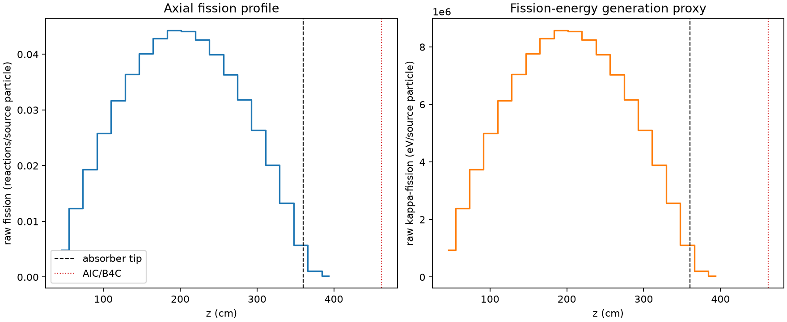
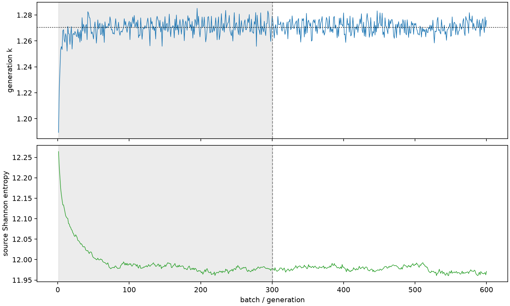

| field | value |
|---|---|
| experiment | V2-STAGE_128_OGRENCI_01-0009 |
| k | 1.2704220643168105 |
| MC standard error | 0.00018541782673599596 |
| seconds | 1034.4116645769973 |
| acceptance | not_assessed |
| convergence | review_required |
Completed is output integrity only; physical and statistical review required. Zero tallies do not prove zero production or zero uncertainty.
| diagnostic | value |
|---|---|
| geometric fuel voxels | 5280 |
| zero fission tally voxels | 0 |
| low signal fuel voxels | 0 |
| low signal fission share | 0.0 |
| low signal kappa share | 0.0 |
| important fission share | 0.9500418914219592 |
| previous filter included | 5280 |
| duration estimate s | 1562.5173488400023 |
| actual minus estimate s | -528.1056842630051 |
| fission relative MC error | statistics |
|---|---|
| all_geometric_fuel | {"voxels": 5280, "positive_mean_voxels": 5280, "zero_mean_voxels": 0, "undefined_relative_error_voxels": 0, "median": 0.009833502544896611, "p95": 0.058257284068948194, "maximum": 0.1488948020831821} |
| low_signal | {"voxels": 0, "positive_mean_voxels": 0, "zero_mean_voxels": 0, "undefined_relative_error_voxels": 0, "median": null, "p95": null, "maximum": null} |
| important_95pct | {"voxels": 3922, "positive_mean_voxels": 3922, "zero_mean_voxels": 0, "undefined_relative_error_voxels": 0, "median": 0.008927856790019825, "p95": 0.013560747051623977, "maximum": 0.017393749248260756} |
| outside_previous_filter | {"voxels": 0, "positive_mean_voxels": 0, "zero_mean_voxels": 0, "undefined_relative_error_voxels": 0, "median": null, "p95": null, "maximum": null} |
| kappa_fission relative MC error | statistics |
|---|---|
| all_geometric_fuel | {"voxels": 5280, "positive_mean_voxels": 5280, "zero_mean_voxels": 0, "undefined_relative_error_voxels": 0, "median": 0.009822327127886013, "p95": 0.0581642025420662, "maximum": 0.14872583973943967} |
| low_signal | {"voxels": 0, "positive_mean_voxels": 0, "zero_mean_voxels": 0, "undefined_relative_error_voxels": 0, "median": null, "p95": null, "maximum": null} |
| important_95pct | {"voxels": 3922, "positive_mean_voxels": 3922, "zero_mean_voxels": 0, "undefined_relative_error_voxels": 0, "median": 0.00891814330726584, "p95": 0.013547175940094447, "maximum": 0.017375039221567707} |
| outside_previous_filter | {"voxels": 0, "positive_mean_voxels": 0, "zero_mean_voxels": 0, "undefined_relative_error_voxels": 0, "median": null, "p95": null, "maximum": null} |
| axial bin | fission share | kappa-fission share |
|---|---|---|
| 1 | 0.009336477520039172 | 0.009336854689341164 |
| 2 | 0.02369202100927197 | 0.023691977143338382 |
| 3 | 0.03717281571302756 | 0.03717264600247545 |
| 4 | 0.049766684392877465 | 0.0497666488582486 |
| 5 | 0.060951181037022 | 0.060951123252394476 |
| 6 | 0.07016856928502642 | 0.07016865674386925 |
| 7 | 0.07724899664504987 | 0.07724882557340863 |
| 8 | 0.08248875679417604 | 0.08248839558045522 |
| 9 | 0.0852316869097255 | 0.08523141787626982 |
| 10 | 0.08502461877989387 | 0.08502446147354682 |
| 11 | 0.08200731344900761 | 0.08200704030176158 |
| 12 | 0.07698060047941532 | 0.07698046025527543 |
| 13 | 0.06996527473966577 | 0.06996529909510604 |
| 14 | 0.06138997961011125 | 0.06138987191901338 |
| 15 | 0.05080941330943802 | 0.05080939978100609 |
| 16 | 0.03870491074579815 | 0.038704807850472436 |
| 17 | 0.025556296385340318 | 0.025556151806169575 |
| 18 | 0.011052272018688155 | 0.011052904078999353 |
| 19 | 0.0020548744801968904 | 0.002055627257724215 |
| 20 | 0.0003972566962285992 | 0.0003974304611238821 |
Histories include the inactive-to-active transition at batch 300. kappa-fission approximates fission energy production, not total heat deposition.

